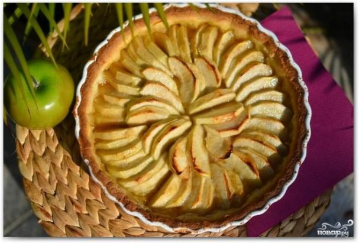

Состав / Ингредиенты(на 4 порции):
Мука 200 Грамм
Сливочное масло 200 Грамм
Мелкий белый сахар 140 Грамм
Желток 2 Штуки
Ванильная эссенция 1/2 Чайных ложки
Яблоки 5 Штук
Лимонный сок 3 Ст. ложки
Берем большую миску, просеиваем в нее муку. Туда же добавляем натертое на крупной терке сливочное масло. Перемешиваем.
Добавляем сахар, перемешиваем. По консистенции должно получаться что-то вроде крошки.
Теперь добавляем в смесь желтки и ванильную эссенцию.
Быстро перемешиваем и формируем из теста шар. Заворачиваем шарик в пленку и отправляем в холодильник на полчаса. Пока тесто в холодильнике - занимаемся начинкой.
Берем яблоки, снимаем кожуру, вырезаем сердцевины. Нарезаем яблоки тонкими дольками и сбрызгиваем их лимонным соком. Это делается для того, чтобы они не потемнели.
Достаем тесто из холодильника, раскатываем. По толщине смотрите сами - я раскатывала на 5 см длиннее моей формы для выпекания, длина которой - 23 см.
Перекладываем тесто в форму для выпекания, прижимаем к бортикам, лишнее тесто срезаем. Не ленитесь - чем красивее, тем и вкуснее
Красиво укладываем в форму наши яблоки. Поливаем яблоки топленым сливочным маслом, посыпаем сахаром. Ставим форму для выпекания в духовку и выпекаем 45 минут при 200 градусах.
Изумительный французский тарт готов!
.svg)